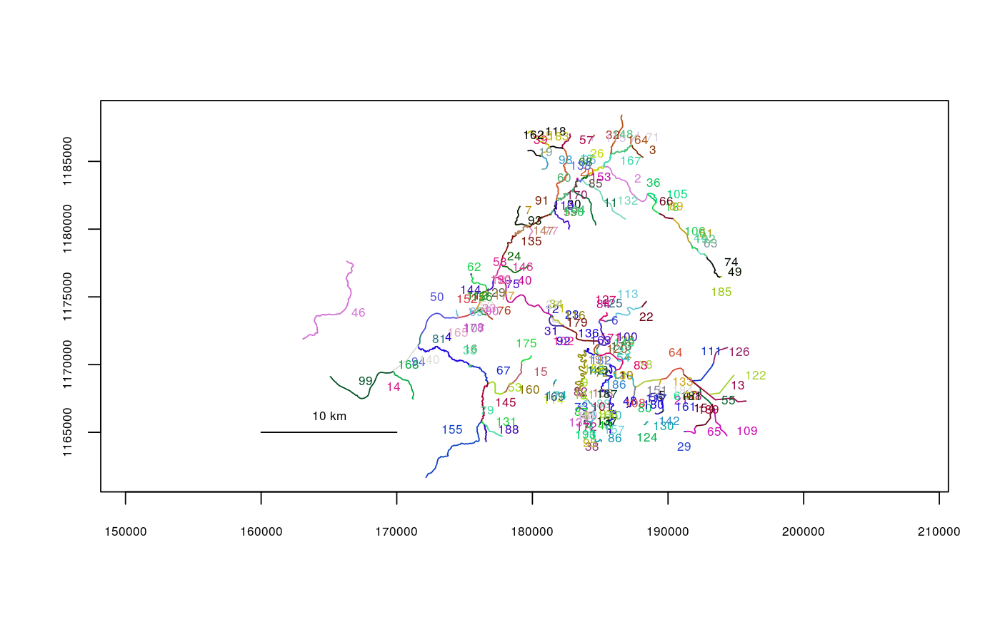
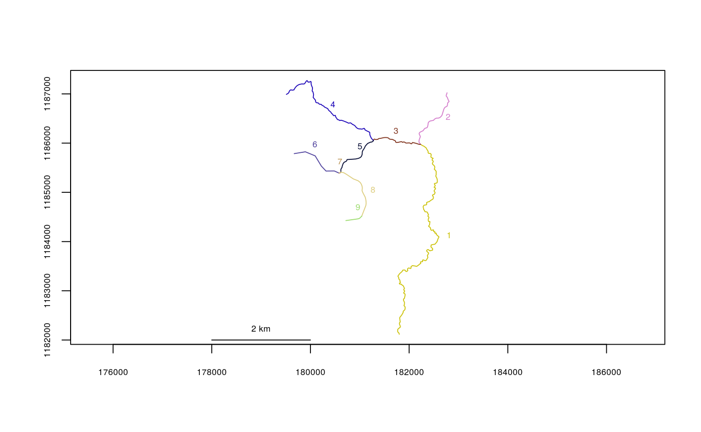

Trim a River Network Object to Specified Segments
Removes line segments from a river network object. User can specify which segments to remove (trim) or which segments to keep (trimto).
trimriver(trim = NULL, trimto = NULL, rivers)
Arguments
| trim | Vector of line segments to remove |
|---|---|
| trimto | Vector of line segments to keep |
| rivers | The river network object |
Value
A new river network object
Note
Specifying segments in both trim and trimto arguments will result in an error.
See also
Examples
data(Kenai1) plot(x=Kenai1)Kenai1.trim <- trimriver(trim=c(46,32,115,174,169,114,124,142,80), rivers=Kenai1)#>plot(x=Kenai1.trim)Kenai1.trim.2 <- trimriver(trimto=c(20,57,118,183,45,162,39,98,19), rivers=Kenai1)#>plot(x=Kenai1.trim.2)